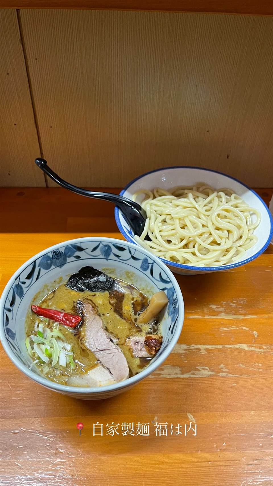

ラーメン · つけ麺 · 曙橋
★ また行きたいつけ麺で13位
自家製麺 福は内
山芋練り込みもちもち麺の濃厚スパイシーなカレーつけめん
自家製麺 福は内
埼玉・熊谷の道の駅から曙橋へ移転してきたつけ麺店。高田馬場「俺の空」で修業した店主が、山芋を練り込んだもちもち自家製麺と、濃厚でスパイシーなカレーつけめんで人気を集めている。

TRIVIA
豆知識
- 熊谷の道の駅から曙橋へ移転してきた店
- 券売機が今どき珍しい500円玉専用
REVIEWS
世間の評判
96.4ラーメンDB3.70食べログ
カレーつけ麺の実力とモチモチ太麺
- 豚骨魚介スープに合わせたカレーつけ麺がTRYラーメン大賞でも評価された実力があるという声が多い
- モチモチの極太麺がつけ汁をしっかりと絡め取ると評価されている
- つけ麺だけでなくラーメンの美味しさも評価する家族連れの声がある
ラーメンデータベース 口コミ127件・総合167位・最新 2026-07
| 創業 | 2008年10月25日に埼玉県熊谷市の道の駅めぬまで創業、2020年9月に東京・曙橋へ移転 |
|---|---|
| 系譜 | 高田馬場の人気店「俺の空」出身。同店から独立した「狼煙」（埼玉）の店主とは同期にあたる |
| 看板 | カレーつけめん |
| こだわり | 自家製麺は山芋を練り込み、北海道産小麦と埼玉県産あやひかりをブレンド。高加水でもちもちの食感が特徴 |
| どこから | 都心 |
| 行くなら | 不定休 |
| 営業時間 | 月〜日 11:00-15:00、17:00-21:00 |
| 予算 | 昼 ¥1,000～¥1,999 夜 ¥1,000～¥1,999 |
| 定休日 | 不定休 |
| 場所 | 曙橋駅 東京都新宿区（曙橋） |
| メモ | カウンター5席のみの小さな店。昭和レトロな雰囲気で、券売機は500円硬貨専用。不定期営業でXで告知 |
食べたもの：つけ麺
ひとりで入りやすい
OFFICIAL
店からの知らせ
その日の限定や臨時の休みは、店のXに出ます。
NEARBY
近い店・同じ系統の店
-
 ★
つけ麺 新小岩
麺屋 一燈
フレンチ出身の店主が42歳で始めた濃厚魚介豚骨つけ麺
昼 ¥1,000～¥1,999 夜 ¥1,000～¥1,999
★
つけ麺 新小岩
麺屋 一燈
フレンチ出身の店主が42歳で始めた濃厚魚介豚骨つけ麺
昼 ¥1,000～¥1,999 夜 ¥1,000～¥1,999
-
 ★
つけ麺 東十条
燦燦斗（さんさんと）
1日2時間半だけの営業、寺子屋仕込みのつけ麺
夜 ～¥999
★
つけ麺 東十条
燦燦斗（さんさんと）
1日2時間半だけの営業、寺子屋仕込みのつけ麺
夜 ～¥999
-
 ★
つけ麺 神田
三馬路 東京店（サンマロ）
博多祇園の名店をルーツに持つ、百名店選出の淡麗塩そば
夜 ¥1,000～¥1,999
★
つけ麺 神田
三馬路 東京店（サンマロ）
博多祇園の名店をルーツに持つ、百名店選出の淡麗塩そば
夜 ¥1,000～¥1,999
-
 ★
つけ麺 青葉台駅
らぁ麺 すぎ本
ラーメンの鬼、最後の弟子が作る自家製麺のつけ麺
昼 ¥1,000～¥1,999 夜 ¥1,000～¥1,999
★
つけ麺 青葉台駅
らぁ麺 すぎ本
ラーメンの鬼、最後の弟子が作る自家製麺のつけ麺
昼 ¥1,000～¥1,999 夜 ¥1,000～¥1,999
-
 ★
つけ麺 地下鉄成増
中華そば べんてん
べんてん-とし岡系という系譜を生んだ源流店とされる中華そば
昼 ¥1,000～¥1,999
★
つけ麺 地下鉄成増
中華そば べんてん
べんてん-とし岡系という系譜を生んだ源流店とされる中華そば
昼 ¥1,000～¥1,999
-
 ★
つけ麺 王子
キング製麺
ビブグルマン店の系列、白だしと山椒から選べる2種のスープ
昼 ¥1,000～¥1,999 夜 ¥1,000～¥1,999
★
つけ麺 王子
キング製麺
ビブグルマン店の系列、白だしと山椒から選べる2種のスープ
昼 ¥1,000～¥1,999 夜 ¥1,000～¥1,999
ONSEN & SAUNA